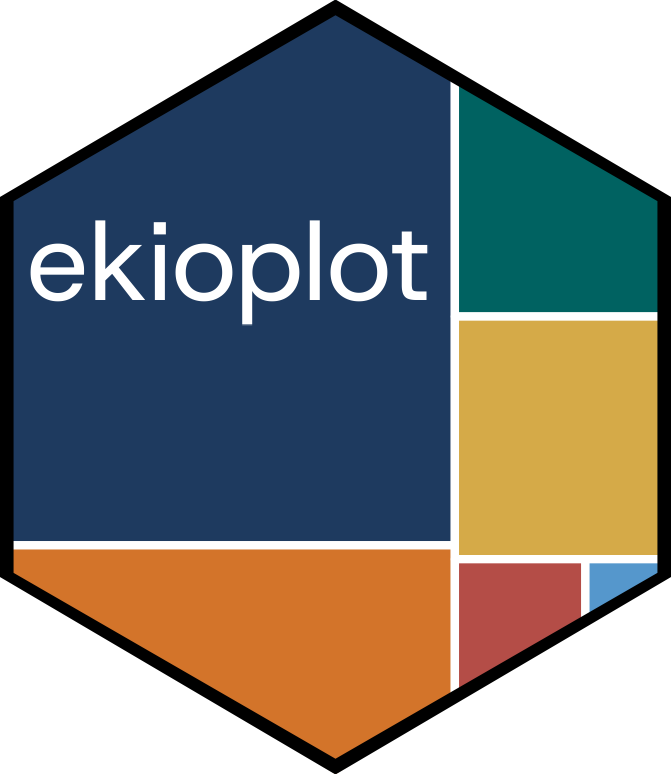

IPS Brasil 2025 - Social Progress Index for Brazilian Municipalities
Source:R/data.R
ips_brasil.RdA dataset containing the Social Progress Index rankings for the top 25 most populated Brazilian municipalities in 2025. The IPS Brasil is a comprehensive index that measures social and environmental progress across all 5,570 Brazilian municipalities using 57 indicators.
Format
A data frame with 200 rows (25 municipalities x 8 measures) and 8 variables:
- codigo_ibge
IBGE municipality code (numeric)
- municipio
Municipality name (character)
- uf
State abbreviation (character)
- populacao_2022
Population in 2022 (numeric)
- measure
Indicator measured, one of 8 key social progress indicators (factor)
- rank
Ranking position among the 25 municipalities for each measure (1-25, numeric)
- highlight
Municipality name if it's one of the 7 highlighted cities, empty string otherwise (character)
- is_highlight
Factor indicating if municipality is highlighted (0 or 1)
- rank_labels
Formatted rank labels showing only positions 1, 5, 10, 15, 20, 25 with ordinal suffix (character)
Source
IPS Brasil 2025 - Indice de Progresso Social Brasil https://ipsbrasil.org.br/pt
The IPS Brasil is developed by Instituto Imazon and follows the methodology of the Social Progress Imperative, using 57 indicators across three dimensions: Basic Human Needs, Foundations of Wellbeing, and Opportunity.
Details
The dataset focuses on the 25 most populated Brazilian municipalities and includes rankings across 8 key social progress indicators:
Indicators included:
Social Progress Index: Overall composite score
GDP per capita: Economic indicator (2021 data)
Water and Sanitation: Access to basic services
Housing Conditions: Quality of housing infrastructure
Safety: Personal security measures
Healthcare and Wellbeing: Health system performance
Avg. ENEM scores: Educational outcomes (national exam)
Share College Educ.: Percentage of population with higher education
Highlighted municipalities (7 cities with special focus): The dataset highlights 7 specific municipalities for comparison purposes: Sao Paulo (SP), Brasilia (DF), Rio de Janeiro (RJ), Belem (PA), Porto Alegre (RS), Fortaleza (CE), and Recife (PE).
Data transformation: Rankings are calculated where rank 1 = best performance and rank 25 = worst performance among the top 25 most populated cities. The data is in long format with one row per municipality-indicator combination.
References
Imazon. (2025). Indice de Progresso Social Brasil 2025. https://imazon.org.br/categorias/indice-de-progresso-social/